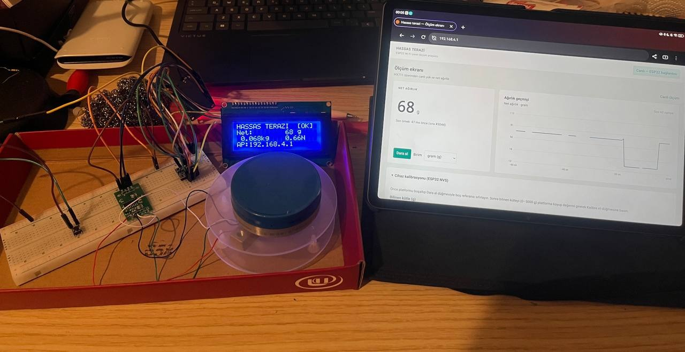

ESP32 / HX711 / 20×4 LCD
Wheatstone Köprülü Hassas Terazi Yapımı: ESP32 ve HX711
ESP32, HX711 ve 5 kg yük hücresi ile Wheatstone köprülü dijital hassas terazi yapımı. Bağlantılar, PlatformIO kurulumu ve kalibrasyon. ESP32 kendi Wi-Fi ağını açar ve canlı ölçümü tablet tarayıcısında gösterir. İnternet gerekmez.
Kaynak kodu GitHub’da aç Kurulum rehberi

Parçalar ve bağlantılar
Tam Wheatstone köprülü, dört telli yük hücresi; HX711; ESP32; 20×4 I²C LCD; seviye dönüştürücü ve dara düğmesi. 5 kg hücrenin nominal kapasitesidir; bu, terazi doğruluğu garantisi değildir.
- HX711 DOUT / SCK
- GPIO16 / GPIO4
- LCD SDA / SCL
- GPIO21 / GPIO22 · I²C
0x27 - Dara düğmesi
- GPIO27 → GND
Kurulum ve kalibrasyon
- Parola şablonunu
firmware/wifi_local.example.h→firmware/wifi_local.h. Yerel Wi-Fi parolanı ayarla. - PlatformIO ile derle:
pio run -d firmware -e terazi_main. - Açılış darası için platformu boş bırak. HassasTerazi ağına bağlan ve tarayıcıda 192.168.4.1 adresini aç.
- Kütlesi bilinen bir cisimle kalibre et, ardından farklı bir yükle sonucu kontrol et.
Wheatstone köprüsü nasıl çalışıyor?
Yük, köprü kollarındaki gerinim ölçerlerin direncini değiştirir. HX711 köprünün diferansiyel çıkışını sayısallaştırır; ESP32 boş referansı çıkarıp kalibrasyon katsayısıyla sonucu grama çevirir.
Köprü simülasyonu ve test çıktıları · Sensör ve LCD teşhis örnekleri